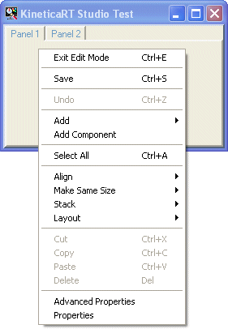

KineticaRT Studio panels can contain any Windows .NET controls including the KineticaRT Studio .NET controls and the standard KineticaRT .NET controls.
The KineticaRT.Studio controls are designed specifically for use within KineticaRT Studio and will all support drag and drop of channels and automatic configuration with display of channel description, channel units etc.
The standard KineticaRT controls will also support drag and drop but are designed mainly for use with Visual Studio / Visual Basic so have less automatic configuration and also have far more configuration options.
Non-KineticaRT .NET controls are generally not designed for use with KineticaRT channels and generally need some source code written in order to tell them what to do. This can either be placed in a KineticaRT Sequence or for ease of use by the end user it is often better to wrap the control in a custom User Control which provides all the automatic configuration, drag & drop etc functionality that the user will expect. This can then be dropped onto a KineticaRT panel and used in the same way the KineticaRT Studio controls are. To do this will require a software development package such as Microsoft's Visual Studio or Visual Basic.

Right click on your panel and select Enter Edit Mode then right click again to display the edit menu as shown.
The menus are described below.
Some of the menu options work on the selected controls. Any number of controls can be selected and one of them is always the master control. The master control can be identified by its larger handles.
To select a control, click on it with the mouse or drag the selection box around it using the mouse. The selection box can be dragged around several controls at once.
To select extra controls, click on them using the mouse while holding down the SHIFT or CTRL keys. Alternatively drag the selection box around them while holding the SHIFT key.
To un-select controls, click on them using the mouse while holding down the CTRL key.
To unselect all controls click on the panel background or on the tabs at the top
of the panel.
The options on the edit menu allow for configuration of the controls on the panel.
Each option is detailed here.
Right clicking on a control instead of the panel background or tab brings up an edit menu specific to that control.
The options on this menu are detailed here.
You can enter a controls property dialog box via:
The properties are divided into groups, some groups are specific to a type of control, others are shared between many types of control. The more common groups used by the KineticaRT.Studio controls are described here:
The method of connecting a channel to a control, or a control to a channel depends on the control.
The KineticaRT.Studio controls can be connected by:
At present drag and drop does not work when in edit mode.